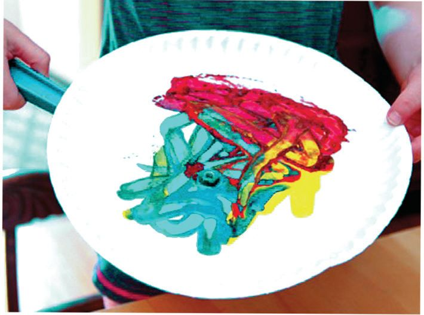
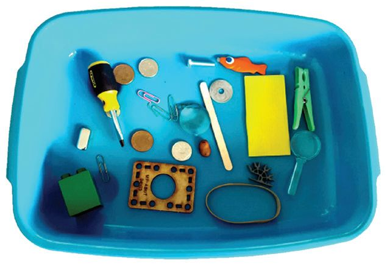
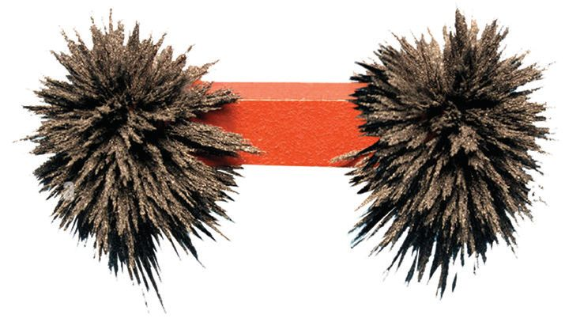
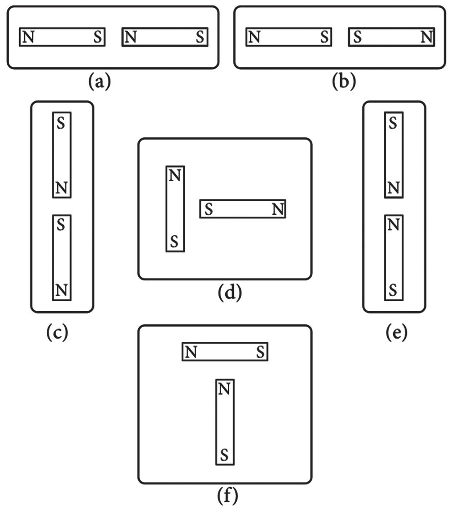

Observe the images. Aren’t these objects familiar to you? Write down what
they are.
When these things are closed, why do they stick together so easily? Haven’t
you noticed this? What could be the reason for this? What will happen if you
bring a pin near the closing parts of these objects? Can you guess why they
stick together so easily? Discuss.
There may be a magnet in your house too. Do you have magnets in your
Science Kit? Where did you collect them from?
I collected the
magnet from a
damaged loud
speaker.
Take a magnet from the Science Kit. Attach
a steel gem clip to it. Does the clip fall if
you release your hand? Add another clip to
it. Let's see how many clips can be hung up
like this.
Shall
we
have
a
competition? Take the
following materials from
your Science Kit.
u
Magnet
u
Gem clips
u
Pin
u
Nail
First, take the gem clips and the magnet. Then, arrange them one below the
other, as shown in the figure above. Try to make a chain. Who made the
longest chain? How many gem clips are there in the chain?
Don't we usually have different kinds of beads
in a chain? Similarly, here, what if we use gem
clips of different colours, pins, nails etc.? Check
who has made the most beautiful chain.
Magic with a Magnet
Shall we perform a magic in class? Materials required:
u
A paper with a picture of a butterfly
u
Safety pin
u
Magnet
u
Chart paper
26
Page 27

Figure fig_ch02_p027_01 (Page 27)

Figure fig_ch02_p027_02 (Page 27)
Class VI
Cut out the picture of a butterfly. Attach a safety pin to the back of the picture
so that it remains hidden. Place it on a chart paper. Try moving a magnet
below the chart paper. Doesn’t the butterfly move as you move the magnet?
What happens when you take away the magnet? Try this with other pictures.
Hold the chart paper vertically and perform this magic before your parents.
Thus, you too can become a magician.
Painting Using a Magnet?
Let's draw a picture using a magnet. What materials do we need to draw this
picture?
u
A paper plate
u
Acrylic paint/fabric paint/poster colour (two or three colours)
u
Small metal balls (used in bicycles) or gem clips
u
Magnet
Let’s start painting. Put some drops of
different colour paint at various parts of the
plate. Place four or five small metal balls on
the plate. Move the magnet underneath the
plate. What do you observe? Don’t the balls
moving over the paint create some patterns?
Give borders to this picture and make it
beautiful. Exchange these among friends and assess them.
Will a magnet attract all objects? Let’s do an experiment.
Objects Attracted and Not Attracted by a Magnet
Which are the objects attracted by a magnet? Take the available items from the
Science Kit and do the activity. Tabulate your findings.
Attracted by magnet
Not attracted by
magnet
27
Page 28

Figure fig_ch02_p028_01 (Page 28)
Basic Science
Which objects were attracted by the magnet and which were not?
Magnetic Substances and Non-Magnetic Substances
Magnetic substances are those that are attracted by a magnet. Iron, nickel,
cobalt etc., are magnetic substances. Non-magnetic substances are those which
are not attracted by a magnet. Paper, plastic, gold, wood, etc., are non-magnetic
substances.
Examine more objects and classify them as magnetic substances and nonmagnetic substances.
Magnetic substances
•
Nail
Non-magnetic substances
•
•
Cloth
•
Magnetic Force at the Poles
Bring the tip of a magnet near some pins. Then bring the middle part of the
magnet near the pins. Which part of the magnet attracts more pins? Let's do
one more activity to make this more clear. What are the materials we need?
u
A Bar magnet wrapped in paper
u
Iron filings
Bring the wrapped bar magnet close to the
iron filings. Won't the iron filings stick to it?
We wrapped the magnet in paper to make it
easier to remove the iron filings from the
magnet.
Do the iron filings stick to all parts of the magnet in the same way? Does any
part of the magnet have more iron filings? Why does this happen? Discuss
with your friends.
Magnetic Poles
Usually, the force of attraction of a magnet is stronger at its ends. These ends
with stronger force of attraction are called the magnetic poles. Every magnet
has two poles.
Does a Magnet Exert Force?
Place a magnet on a table. Keep a pin a little away from the tip of the magnet.
Slowly move the pin closer to the magnet. What happens to the pin when it
comes closer to the magnet? Did this happen due to the force exerted by the
magnet? Discuss.
Magnetic Field
The force exerted by a magnet is called magnetic force. A magnetic field is the
region around a magnet where magnetic force is experienced. Magnetic field
is invisible.
Let’s Draw Magnetic Field Lines
You have learned what a magnetic field is. Haven't you found out that
magnetic force is experienced in a magnetic field? Let's do an experiment.
What materials do we need?
u
A rectangular glass sheet
u
A magnet
u
Iron filings
Arrange the rectangular glass sheet between the
books as shown in the figure. Place a bar magnet under the glass sheet and
sprinkle iron filings on the upper side of the glass sheet. Gently tap the glass
sheet if necessary. What did you observe?
Aren't the iron filings arranged in a specific pattern?
This arrangement indicates the magnetic field lines.
This is a part of the magnetic field. Draw the magnetic
field lines you have observed.
There are magnetic field lines in the magnetic field.
Both of them are invisible. Observe the figure. Didn't
you understand how to draw the magnetic field lines?
For Further Reading
Making a Magnet
Magnets are made using magnetic substances. An alloy called Alnico a mixture
of Aluminium, Nickel and Cobalt is commonly used for this purpose. Many
other materials are also used for making magnets. Different types of magnets
made of samarium, cobalt, ferrite rubber and neodymium also exist. Among
these, neodymium magnets are the strongest.
Magnetic Substances in Soil
Are there magnetic substances in the
soil of the school ground and its
surroundings? Let's conduct an
activity to find out.
Get a magnet from the loud speaker
of an old music system. Old speakers
can also be found in shops that collect
scrap items. Do the given activity in
groups. Tie the magnet wrapped with a thick paper to a rope and drag it
through the soil for some time. Then check the magnet. Are there any
substances stuck to the paper due to the attraction of the magnet? What is the
reason for this?
Based on this experiment, can you suggest a method to separate iron from a
mixture of soil and iron?
Different Types of Magnets
Do all magnets have the same shape? Examine the magnets in your Science
Kit and the laboratory. Are they all the same?
All those shown in the figures given below are different types of magnets.
How do they differ in their shape? Compare them.
Horse Shoe Bar
Magnet Magnet
Cylindrical Magnetic
Magnet
Needle
Oval
Magnet
U
Magnet
Disc
Magnet
Ring
Magnet
Are they named according to their shape? Draw pictures of different types of
magnets in your Science Diary and write their names.
North and South
We have understood that a magnet has two poles. Do these poles have any
other special features? Let’s examine.
Tie a thread in the middle of the bar magnet and
suspend it freely as shown in the figure. When
the magnet comes to rest, which direction do the
poles point to?
Is it to the east-west direction or to the north-south direction? Change the
direction of the magnet and examine again. Does it return to the same direction
as before? Based on this activity, name the magnetic poles. Repeat the activity
from different places.
Magnetic Poles
South pole
North pole
The pole of the magnet that points towards the
Earth's North is the North Pole of the magnet, and
the pole that points towards the Earth's South is
the South Pole of the magnet. They are denoted
by the letters N and S respectively. To indicate the
North pole of a bar magnet, a special mark is given.
Usually, a white spot is used to mark the north pole.
A freely suspended magnet
always points towards the
North-South direction. Can
we use this property of the
magnet to find directions?
If a Magnet Breaks
What happens if a magnet
is broken into two pieces?
These pieces become two
small magnets.
Let’s Make a Magnetic Compass
In the past people who travelled across the sea and desert
used many methods to find the direction. They used to
depend on the Pole Star and other constellations for this.
After identifying the special property of magnets, finding
directions became easier. Which property of the magnet
did they make use of? Discuss with your friends.
A magnetic compass is a device which uses a magnet to
determine the direction. Get a magnetic compass from the
science lab. Using this, find out the direction of the door of
your classroom. Now find out the direction of school gate with
respect to your classroom. What about the school kitchen and
the office room? Find out. Let's make a magnetic compass of
our own. What materials do we need?
u
Magnet
u
Needle
u
Thread
u
Cork
Thread the needle. Hold the thread and rub the needle from one end to the
other end with a magnet for about 50 times in the same direction. The needle
is threaded for holding it conveniently and for safety.
Take a small cork. After removing the thread, pierce the needle into the cork as
shown in the figure. Otherwise, you can glue the needle to the top of the cork.
Place this cork in a bowl of water. Observe the
direction of the needle on the cork. To which
direction does the needle point? Change the
direction of cork. Does the needle return to its
original position? Write down your inference in
your Science Diary. Mark the North Pole on the
needle. Can't we make use of this device to find direction?
North-South Direction
A freely suspended magnet always rests in the
North-South direction. This is the directional
property of a magnet. What is the reason for
this? Let's find out. Take a magnet and suspend
it freely. Place another bar magnet in the EastWest direction below this magnet. To which
direction does the suspended magnet point
now? Try changing the direction of the
suspended magnet. Does it again come back to
the East-West direction? Discuss the reason.
Now remove the magnet placed below. What change do you observe in the
direction of the suspended magnet? Why? Isn't there another invisible
magnetic force that makes the suspended magnet point towards the NorthSouth direction? Read the following note and discuss.
Geo Magnet
The Earth acts as a magnet. This geo magnet has
a magnetic field. The poles of the Earth’s magnet
are in the North-South direction. The North Pole
of the Earth is the South Pole of the geo magnet.
The South Pole of the Earth is the North Pole of the
geo magnet. That’s why a freely suspended magnet
always points in the North-South direction.
When Magnets Come Closer
Do magnets attract each other? What is your guess? Discuss it. Let’s do an
experiment.
Take two bar magnets with their poles marked. Place one magnet on a table.
Place one pole of the other magnet on different parts of the magnet on the
table. At which regions do they attract?
At which regions do they repel?
Repeat the activity by changing the poles. When the same poles are brought
together, do they attract or repel?
What about unlike poles?
Arrange the magnets as shown in the figure and record the observations.
Share the observations with your friends. Record it in your Science Diary.
Arrangement
Poles coming closer
S-S
33
Observation
Page 34
Figure fig_ch02_p034_01 (Page 34)
Basic Science
Attraction and Repulsion
The same poles of different magnets are called like poles, and their different
poles are called unlike poles. Like poles repel and unlike poles attract.
Place the magnets in the following manner. In each case, do their poles attract
or repel? Discuss the reason.
Figure 1
Figure 2
General Properties of a Magnet
We have conducted various experiments to find out the general properties of
a magnet. What are your findings?
u
A magnet attracts magnetic substances.
u
A magnet has two poles.
u
u
u
u
Write down this in your Science Diary and present it in the class.
The History of Magnet
About 2500 years ago, there was a place called Magnesia in Greece and there
lived a shepherd named Magnus. One day, he was resting, keeping his irontipped staff on a rock. After resting when he tried to pick up his staff from the
rock, the shepherd had a strange experience. Hearing this, all the villagers
rushed to the spot.
Observe the illustration related to the subsequent incidents.
The iron nails in my
boots are also stuck to
the rock.
No, there must be some
other reason.Some kind
of invisible power.
Analyse this incident in relation to the properties of a magnet.
Later, scientists discovered the real reason behind this. Such rocks would not
only attract the shepherd's staff but also all other magnetic substances. In
memory of the shepherd, these rocks were called magnets. There are mountains
having such rocks with magnetic power in many places on Earth. These rocks
known as Lodestones, are natural magnets.
Permanent Magnet and Temporary Magnet
Didn't we make a chain using gem clips? Try to repeat that experiment. Why
does a gem clip stick to the other gem clip attached to the magnet? Did it
happen because the second gem clip acquired magnetic properties? Does it
retain magnetic property when the bar magnet is removed? Why? But isn’t
the magnetic property of a bar magnet retained permanently?
35
Page 36
Figure fig_ch02_p036_01 (Page 36)
Basic Science
When magnetic materials are placed in a magnetic field, they acquire magnetic
properties. When the magnetic field is removed, they lose their magnetic
power. Here the gem clip, nail and pin behave as temporary magnets. The
natural magnet Lodestone and various other magnets you became familiar
with are also permanent magnets. The magnetic property of permanent
magnets persists for a long time.
Let’s Test the Magnetic Force
Do magnets vary in their magnetic force? Let's do an experiment to test the
strength of magnets.
Materials required: Bottle, sand, two pieces of half-inch PVC pipe (50 cm, 15
cm), ½ inch elbow pipe, blade, thread, scale, double-sided tape.
Procedure: Take sand in the bottle and insert the long PVC pipe into the sand
and fix it. Fix the short PVC pipe to the top of the long pipe using the elbow
pipe. Place the bottle on the table. Place the scale near the bottle as shown in
the figure. Stick the scale with the double-sided tape to prevent it from moving.
Suspend a blade from the short PVC pipe as shown. Slowly bring a magnet
from the far end of the scale towards the blade. When attraction is felt on the
blade, note the position of the magnet with the help of the scale. Repeat the
experiment using different magnets. Record the observations in the table.
Magnet
Magnet- 1
The position of magnet when
magnetic force is felt on the
blade (Scale reading)
Of the magnets you have examined, which magnet has the highest magnetic
force? Analyse the scale reading and find out.
Don’t Weaken Me !
Does the magnetic force decrease as time passes? What is your guess? What
could be the reasons? Observe the pictures. Find the reasons and discuss.
Record them in your Science Diary
Oh,
save me!
When thrown
When dumped
together.
When hit hard
with a hammer
When heated
To Retain Magnetic Force
Non magnetic substance
If magnets are dumped together
carelessly, won't they lose their
magnetic force lost quickly? How can
this problem be solved? Observe the
picture.
Analyse the methods for storing
magnets. How are bar magnets stored?
37
Stopper (magnetic substance)
Page 38
Figure fig_ch02_p038_01 (Page 38)
Basic Science
Are bar magnets stored in pairs? Should unlike poles be on the same side?
What should be placed in between two bar magnets? What should be at the
ends?
How is a U-magnet stored? Find out the methods to store other magnets.
Record your findings in your Science Diary and discuss.
Electromagnet
Can we make a magnet using electricity?
What materials do we need?
u
9V battery, connector
u
Insulated copper wire
u
Soft iron nail
u
Pins
Wind the insulated copper wire around an
iron nail as shown in the figure. Make sure to
have many coils. Remove the insulation from
both ends of the copper wire. Connect these ends to the battery using a
connector. Bring the tip of the nail close to a few pins. Note down the
observation in your Science Diary. Disconnect the battery. What happens?
Electromagnet
When electricity passes through a copper wire, a magnetic field is created
around it and the nail becomes a magnet. This is an electromagnet. Its magnetic
power is temporary. When the electric current is cut off, the electromagnet
loses its magnetic power.
Magnets in Daily Life
What are the daily life situations where magnets are used?
Discuss with the help of the figure.
Haven't you noticed magnets being used in each of these devices? Find more
situations where magnets are being used. Write them in your Science Diary
For Further Reading
Inventions that Transformed Life
MRI (Magnetic Resonance Imaging) Machine
Magnetic Strips in Credit and Debit cards
Maglev Train
Similarly, we use magnets in many situations. Collect more pictures of such
instances and prepare an album.
39
Page 40

Figure fig_ch02_p040_01 (Page 40)
Basic Science
Let’s Assess
1.
Which of the following is a magnetic substance?
a) Paper
2.
b) Iron nail
c) Wood
d) Copper wire
Find the correct statements.
a)
A disc magnet has one pole.
b)
Like poles of magnets attract.
c)
The magnetic power is low at the middle part of a bar magnet.
d)
Rubber is a non-magnetic substance.
3.
During carpentry work at home, some iron nails have fallen into the
sawdust. Can you suggest an easy method to separate these nails?
4.
The mark indicating the pole of a magnet is missing. Suggest some
methods to find out the poles?
5.
Observe the figures. In which situations do attraction occur? In which
situations do repulsion occur?
6.
The key of a vehicle has fallen into the crack of a slab on the road. It can’t
be taken out with hands. You can see the key through the crack of the
slabs. Can you suggest a method to get the key without removing the
slab?
Finding Directions
Using the compass you have made, determine the directions of the
kitchen, front door, dining table, bedroom, etc. of your home with respect
to your position. Discuss your experiences with your friends.
2.
Iron-Picking Puppet
Take a puppet and make a slit on its palm. Glue a
small magnet inside it. Make sure it is not visible
from outside. Bring the puppet’s hand closer to a
pile of objects made of different materials. It will
only pick iron objects. Take your puppet to the
class and demonstrate.
3.
Jumping Frog
Fix a stick vertically on a stand. Place two ring
magnets over the stick with its like poles near each
other as shown in the figure. Can you bring them
closer? Why? This principle of repulsion is used in
Maglev Trains. Stick an image of a frog on the
upper ring magnet. Press the upper ring and
release. What do you see? Make such interesting
devices and demonstrate them in your class.
4.
Magnetic Force Through Liquids
Does magnetic force pass through liquids? Do an activity to understand
this. Take equal amounts of water, kerosene coconut oil and palm oil in
four identical, small glass vessels respectively. Put three or four pins in
each vessel. Cover the glass vessel with a square glass sheet. Move a bar
magnet over the glass sheet as shown in the figure. Record your
observation and discuss in your class.